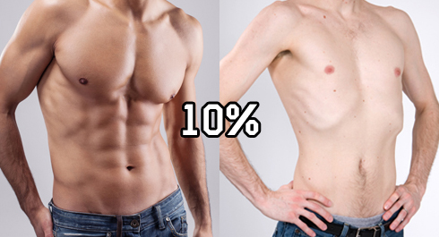
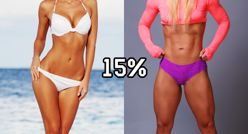

Одним из показателей уровня вашей физической подготовки является количество вашего подкожного жира. Чем меньше жира, тем в лучшей форме вы находитесь. До определенного момента. Наверняка многие из вас будут удивлены, но все те поджарые фитнес-модели с кубиками пресса, которых вы видите на обложках журналов и в статьях про различные упражнения, на самом деле только выглядят хорошо, в душе же они чувствуют себя просто ужасно. Почему? Потому что им приходится проходить через такую штуку как "сушка".
Сушка — профессиональный термин, которым пользуются атлеты для описания процесса выгонки воды и подкожного жира из организма. В бодибилдинге сушка нужна, для того, чтобы придать мышцам максимальный рельеф, а бойцы, тяжелоатлеты и пауэрлифтеры сушатся, чтобы попасть в более легкую весовую категорию и иметь превосходство в поединке против соперников. Сушка — это очень серьезное мероприятие, сопровождающееся изматывающими тренировками, строжайшим рационом и большим количеством спортивных добавок, витаминных комплексов и БАДов, а порою и анаболическими стероидами. Ради победы люди готовы идти на большие жертвы, большой спорт — он такой.
Самое важное, что нужно понимать, — данная форма не пригодна для жизни. Обезвоженный организм, истощенный от нехватки углеводов, не может функционировать так, как мы к этому привыкли. Соревновательная форма потому и зовется соревновательной, что предназначена для соревнований. "Поникший взгляд, сутулость, медленная походка — сушка идет как надо" - именно такие замечания можно нередко услышать в адрес спортсменов во время подготовки к соревнованиям. И это правда - ощущение до фазы загрузки очень неприятное. Но спорт требует этого. Спорт — это в первую очередь ради максимальных показателей, ради защиты чести клуба, города, страны, ради эго, ради денег, девичьих истерик, ради страниц в теме. А ради здоровья — это физкультура и фитнес. И ради здоровья вам нужна не сушка, а лишь избавление от ЛИШНЕГО веса.
Так что глядя на все эти красивые фотографии из журналов или с соревнований вы должны понимать, что на самом деле люди не выглядят так в реальной жизни, что это их пиковая (или близкая к пику) форма, которую они могут поддерживать в течение довольно непродолжительного времени. И это тяжело.
Стрит Воркаут многих привлекает именно потому, что демонстрирует как с помощью обычных силовых упражнений с собственным весом и простого (но правильного!) питания можно получить результат не хуже, чем у фитнес-моделей с обложек журналов! Мы видели эти результаты не на постановочных фотографиях или видео, и не на соревнованиях, а у обычных людей на уличных площадках!
Хотите ещё более интересную причину избавиться от лишнего веса, помимо того, что вы будете лучше выглядеть и лучше себя чувствовать? Чем больше у вашего организма соотношение между мышцами и жиром в пользу мышц, тем легче вам будет сохранять вашу форму! Все очень просто. Когда вы тренируетесь, вы напрягаете свои мышцы и таким образом сжигаете калории. Чем больше у вас мышц, тем больше калорий вы сжигаете за время тренировки! Потому что мышцы работают! Они сокращаются, они разгибаются, они двигают ваше тело! А что делает жир? Жир ничего не делает!
Запомните! Самая сложная часть - это привести себя в хорошую форму, дальше все будет гораздо легче.
Чтобы вам не пришлось тратить свои деньги на проведение дорогостоящих (и не всегда точных) процедур по определению уровня подкожного жира, предлагаем воспользоваться следующими фото-таблицами с сайта builtlean.com. Они, может быть, и не идеально точные, но для приблизительной оценки текущего положения дел подходят отлично!
Для мужчин:

Для женщин:

И вот ещё пара интересных фотографий для вас:


Ну и чтобы совсем добить, немного информации о "толстых костях". Так вот, общая масса скелета взрослого мужчины составляет около 4 кг, а женщины — около 3 килограмм. Конечно, это без учета жирового и жидкостного наполнения, и, конечно, масса может незначительно (в пределах 1-3 кг) колебаться от человека к человеку в зависимости от плотности костей и комплекции. То есть влияние веса скелетных мышц на общий вес человека довольно невелико, а потому все разговоры о "широкой кости", которая влияет на что-либо, — не более чем разговоры.
Источники
1. Human Body Composition, b.918, Steven Heymsfield, Human Kinetics, 2005, р-291.
2. Schuna JM Jr et al. Scaling of adult regional body mass and body composition as a whole to height: Relevance to body shape and body mass index. Am J Hum Biol. 2015 May-Jun;27(3):372-9. doi: 10.1002/ajhb.22653. Epub 2014 Nov 8.
3. Wagner DR, Heyward VH. Measures of body composition in blacks and whites: a comparative review. Am J Clin Nutr. 2000 Jun;71(6):1392-402.